| Index |
| 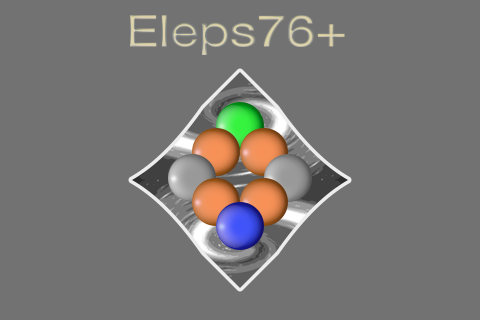 |
| ◎ | iPhone、iPodTouch用の、2人用ボードゲームです。 |
| ◎ | Ｅｌｅｐｓ７６＋（エレプス７６＋）
について Eleps とは、ElectronPiecesの略で、どんな場所時間でも共通な単位として、加算、分配、配置、移動、取得することが可能である電子のように、共通 に設定、取得、連係、分配ができる性質の駒を想定し、それを共通駒として７６個設け、その駒の取得を目的とする競技として、Eleps76+というタイ トル名を付けました。 |
| ◎ | 基本的な競技方法 ・競技者１が先手です。 ・競技者１駒を、盤上の共通駒が指定されているポイントに指定して、共通駒を取得します。 ・その共通駒の個数が、競技者１の得点になります。 ・更に、盤上の無指定のポイントに、共通駒を４個指定します。 ・競技者２も競技者２駒と共通駒で、競技者１と同様の指定を行います。 ・上記の指定を繰り返し、最終的に得点の多い競技者が勝ちとなります。 |
| ◎ | Eleps76+の機能 ・駒の種類が３種類有ります。 ・盤の得点設定が、数値と？で、固定（1〜８）とランダム（１〜９）の２種類有ります。 ・コンピュータの思考方法が、イージー、ノーマル、ハードの３種類有ります。 ・保存機能が有ります。 |
| ◎ | 盤と駒の構成 盤上に、２接続のポイントが６ポイント、３接続のポイントが４ポイント、４接続のポイントが６ポイント、５接続のポイントが２ポイント、 ６接続のポイントが５ポイントあります。２人の競技者が、４個の共通駒の指定を９回行います。全部で７６個の共通駒があります。 |
| ◎ | Phone5、iPodtouch第5世代のRetina4インチディスプレイに対応しています。 |
| ◎ | 現在のヴァージョンは１.３です。 |
| ◎ | 競技画面のパターンを増やし、保存機能を追加しました。(Ver.1.1) |
| ◎ | 画面が重なる状態を修正しました。(Ver.1.2) |
| ◎ | ページが遷移しない問題を解消しました。(Ver.1.3) |
| ◎ | 英語解説を一部変更しました。(Ver.1.4) |
| 1．
競技開始前の競技画面 |
2．
競技者１が競技者１駒を指定後の競技画面 |
3．
競技者１が共通駒を４個指定後の競技画面 |
4．
競技者２が競技者２駒を指定後の競技画面 |
５．競技者２が共通駒を４個指定後の競技画面 |
| 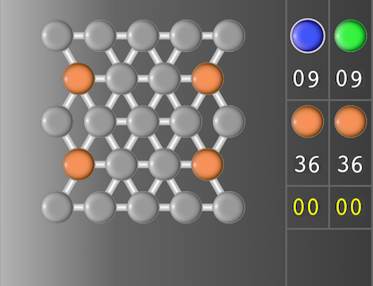 | 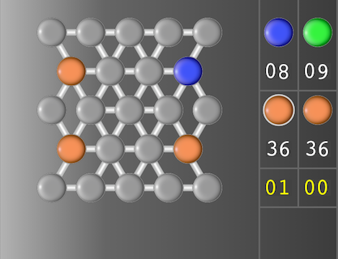 |
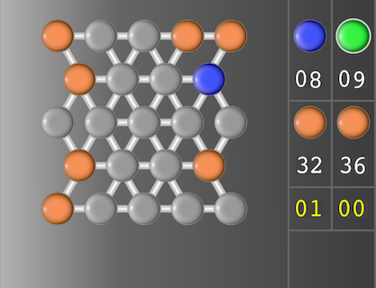 |
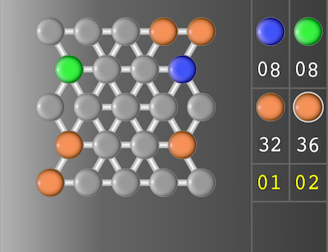 |
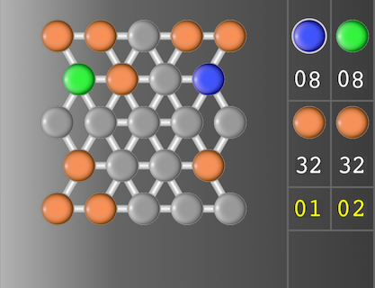 |
| 表示盤に、２３個のポイントがあり、４ポイントに、共通駒が設定されています。 |
表示盤上の共通駒があったポイントをタッチすることにより、競技者１駒が指定され、競技者１駒の個数が９から８に１引かれます。 |
共通駒を４個連続で、表示盤上の無指定のポイントにタッチします。 |
競技者２駒を左の列から1番目、上の行から2番目に指定しました。共通駒を２個取得することにより、競技者２の得点が２になります。 ※１ |
共通駒を４個連続で、表示盤上の無指定のポイントにタッチします。 |
| 1．競技者１が競技者１駒を指定後の競技画面 |
２．競技者１が共通駒を４個指定後の競技画面 |
３．競技者２が競技者２駒を指定後の競技画面 |
４．競技者２が共通駒を４個指定後の競技画面 |
５．得点計算後の競技終了画面 |
| 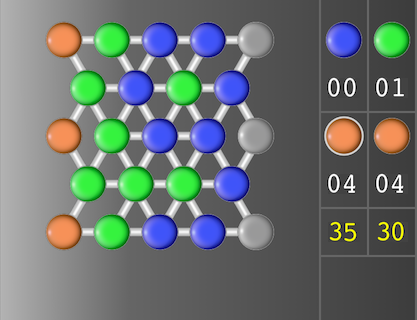 |
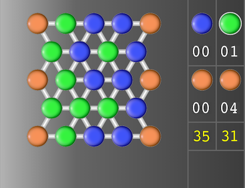 |
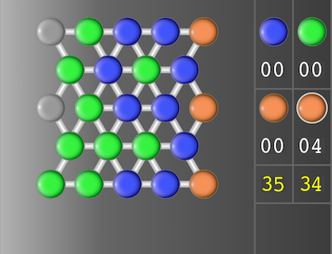 |
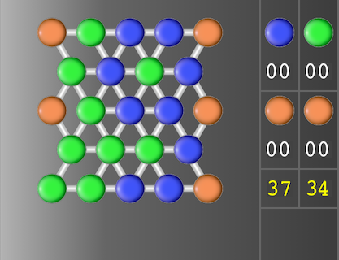 |
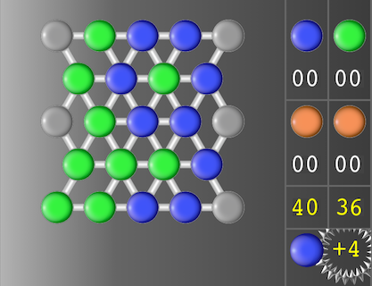 |
| 盤上に無指定のポイントが、３個あります。 |
指定できる無指定のポイントは３ポイントなので、残りの共通駒１個は、 競技者２の得点となります。 | 競技者２駒を左の列から１番目、上の行から5番目に指定しました。共通 駒を３個取得することにより、競技者２の得点が３４になります。 | 指定できる無指定のポイントは２ポイントなので、残りの共通駒２個は、 競技者１の得点となります。 | 得点計算の文字をタッチすることで、得点の計算を行います。競技者１駒
で囲まれた共通駒３個と競技者２駒で囲まれた共通駒２個を、競技者１と競技者２の得点に加算します。競技者１の得点が４多いので、競技
者１駒と＋４を表示し、競技者１が勝ったことを示します。 ※２ |
| １．競技者２が競技者２駒を指定前の競技画面 |
２．競技者２が競技者２駒を指定後の競技画面 |
３．競技者２が共通駒を４個指定後の競技画面 |
４．得点計算後の競技終了画面 |
| 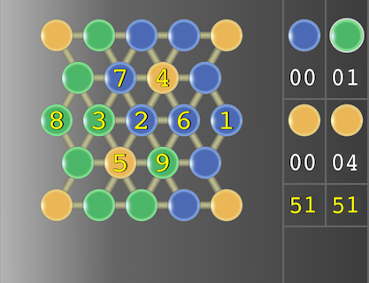 |
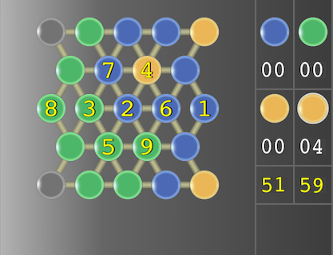 |
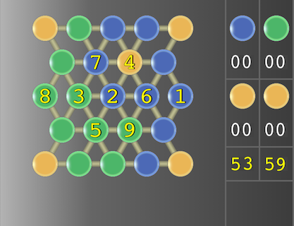 |
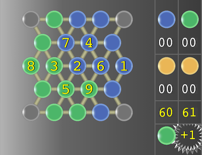 |
| １〜９の数値が所定の場所に、ランダムに設定されています。 |
競技者２駒を左の列から２番目、上の行から４番目に指定しました。共通 駒の3個とポイントに設定された5の合計８が加算され、競技者２の得点が５９と表示されています。 | 指定できる無指定のポイントは2ポイントなので、残りの共通駒2個は、 競技者１の得点となります。 | 得
点計算の文字をタッチすることで、得点の計算を行います。競技者１の得点は、競技者１駒で囲まれた共通駒3個とそのポイントに数値で設定された４の合
計7を加算して、６０になります。競技者２の得点は、競技者２駒で囲まれた共通駒２個を加算して、６１になります。競技者２の得点が１多いので、競技
者２駒と＋１を表示し、競技者２が勝ったことを示します。 ※２ |
| １．競技者２が競技者２駒を指定前の競技画面 | ２．競技者２が競技者２駒を指定後の競技画面 | ３．競技者２が共通駒を４個指定後の競技画面 | ４．得点計算後の競技終了画面 |
| 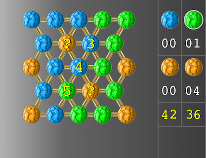 |
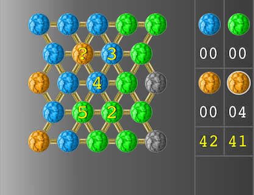 |
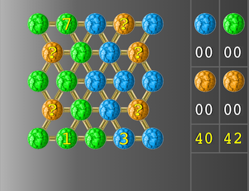 |
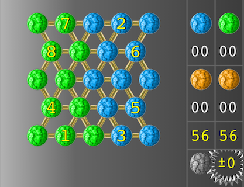 |
| 盤上のポイントに３、７の数値が表示されているので、？は１、２、４、５、６、８であることが予想できます。 |
競技者２駒を左の列から２番目、上の行から５番目に指定しました。？に １が設定されていたことが分かります。共通駒の３個とポイントに設定された１の合計４が得点に加算され、競技者２の得点が４２と表示されています。 | 指定できる無指定のポイントは２ポイントなので、残りの共通駒２個は、競技者１の得点となります。 | 得点計算の文字をタッチすることで、得点の計算を行います。競技者１の得点は、競技者１駒で囲まれた共通駒３個と、ポイントに設定された２、５、６の合計１６を加算して、５６になります。競技者２の得点は、競技者２駒で囲まれた共通駒２個と、ポイントに設定された４と８の合計１４を加算して、５６になります。競技者１と競技者２の得点が同じなので、初期設定駒と＋０を表示し、同点であることを示します。 ※２ |
| ○ |
競技者１が競技者１駒を指定する場合、競技者１が競技者１駒で取得する 得点と、４個 の共通駒を指定後に、競技者２が競技者２駒で取得する得点を予想します。その差が、競技者１の得点にプラスとなるポイントを指定します。競技者２の場合も 同様です。 |
| ○ | 競技者１が４個の共通駒を指定する場合、４個の共通駒を指定後に、競技 者２が競技者２駒で取得する得点と、４個の共通駒を指定後に、競技者１が競技者１駒で取得する得点を予想します。その差が、競技者１の得点にプラスとなる ポイントを指定します。競技者２も同様です。 |